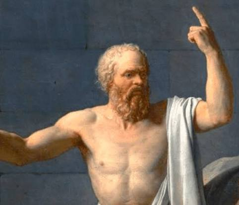
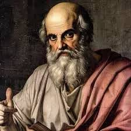
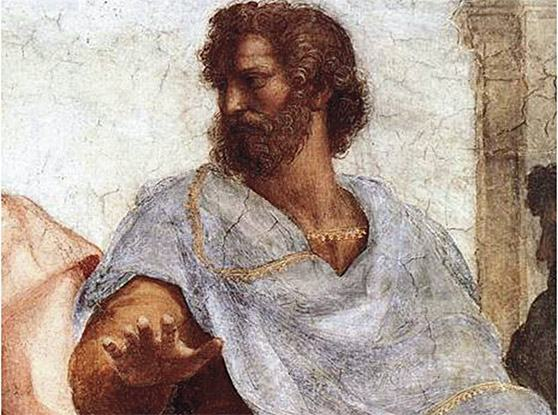
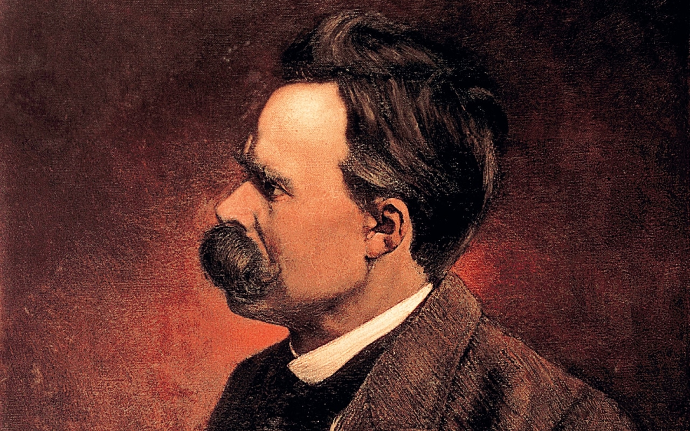

Sócrates
470 a.C. – 399 a.C.Pai da filosofia ocidental, utilizava o diálogo e a ironia para fazer as pessoas questionarem suas próprias certezas sobre a virtude e a verdade.

Platão
428 a.C. – 348 a.C.Discípulo de Sócrates, desenvolveu a Teoria das Ideias, afirmando que o mundo sensível é apenas uma sombra imperfeita da realidade ideal.

Aristóteles
384 a.C. – 322 a.C.Aluno de Platão e fundador do Liceu, organizou os campos do conhecimento humano, criando a lógica formal e a ética da virtude.

René Descartes
1596 – 1650Fundador do racionalismo moderno, utilizou a dúvida metódica para encontrar a primeira verdade inabalável sobre a própria existência.

Immanuel Kant
1724 – 1804Sintetizou o racionalismo e o empirismo em sua filosofia crítica, propondo o Imperativo Categórico como guia para a moral universal.

Friedrich Nietzsche
1844 – 1900Crítico feroz da moral tradicional ocidental, desenvolveu os conceitos de 'Übermensch' (Super-homem), Vontade de Potência e Amor Fati.